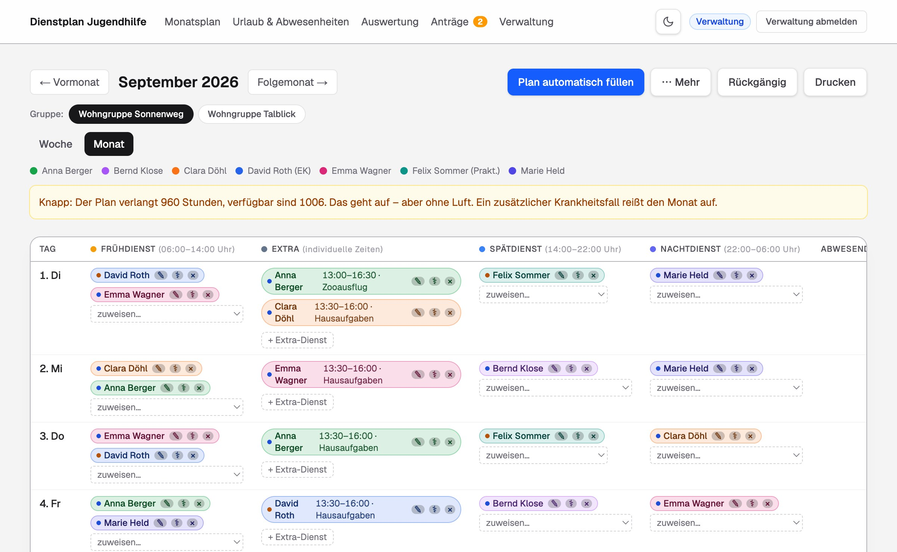
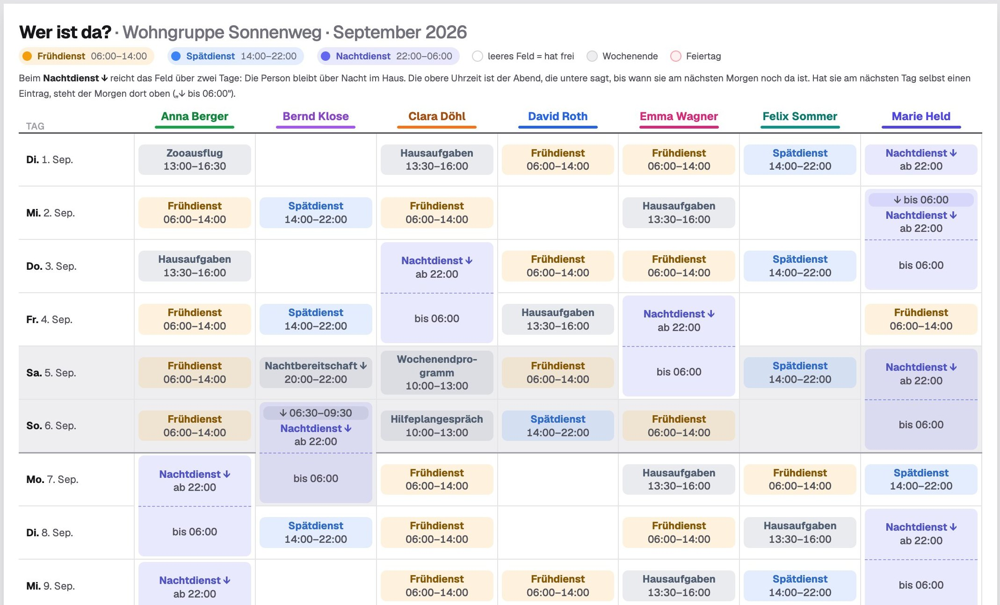
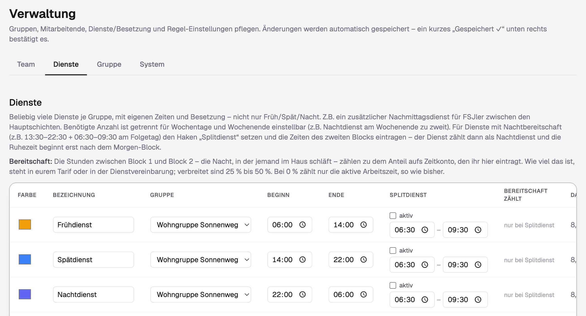

Schichtplanung, die am Brett verständlich ist.
Einmal eingerichtet, füllt ein Klick den ganzen Monat — gemessen 1,1 Sekunden. Das Arbeitszeitgesetz läuft mit, Stunden und Urlaub rechnen sich selbst, und der Aushang fürs Brett fällt dabei ab. Zum Anfangen braucht ihr einen Rechner und einen Download — kein Konto, keine E-Mail-Adresse, keine Freischaltung. Kostenlos statt Monat für Monat, und kein einziges Datum verlässt euer Haus. Gebaut für Wohngruppen der Jugendhilfe, von jemandem, der selbst darin arbeitet.
Kostenlos und ohne Abo — weiterentwickelt mit den Beiträgen der Häuser, die sie nutzen. Beitragen →
Knapp: Der Plan verlangt 822 Stunden, verfügbar sind 823. Das geht auf — aber ohne Luft. Ein zusätzlicher Krankheitsfall reißt den Monat auf.
| Tag | Frühdienst (07:00–16:30) | Mittagsdienst (12:00–20:30) | Nachtdienst (16:30–22:30 + 06:30–09:30) |
|---|
- Der Nachtdienst bleibt ein Eintrag. Er steht am Tag, an dem er beginnt — nichts wird über zwei Tage zerrissen. Die Stunden nach Mitternacht rechnet die App trotzdem richtig, und auf dem Aushang läuft der Block mit Pfeil in den Folgetag.
- Eingeteilt wird nach Stunden. Jede Person hat ihr Monats-Soll aus den Vertragsstunden. Die automatische Verteilung nimmt zuerst, wer am wenigsten davon erfüllt hat — und der Punkt am Namen zeigt es jederzeit: grün = noch Luft, blau = im Soll, rot = darüber.
- Lücken rufen laut. Ein Dienst ohne Menschen steht rot im Plan, Unterbesetzung gelb — und die Warnleiste oben sagt ehrlich, wenn der Monat rechnerisch nicht aufgeht.
Nachgebaut mit den Farben und Abständen der Anwendung. Echte Aufnahmen weiter unten.
In einer Minute
Vom leeren Monat zum Aushang.
Sechs Schritte, so wie die Anwendung sie zeigt. Mit „Weiter" geht ihr selbst hindurch, mit „Abspielen" läuft es von allein. Alle Namen sind erfunden.
Knapp: Der Plan verlangt 822 Stunden, verfügbar sind 823. Das geht auf — aber ohne Luft. Ein zusätzlicher Krankheitsfall reißt den Monat auf.
| Zeitkonto August | Stelle | Soll | Ist | Saldo |
|---|---|---|---|---|
| David Nowak | 100 % | 169,0 | 172,5 | +3,5 |
| Lena Wolff | 75 % | 126,8 | 121,0 | −5,8 |
| Tobias Ehlers | 50 % | 84,5 | 84,5 | 0,0 |
Stunden, Beispieldaten · Saldo geht als Übertrag in den September
Schritt 1 von 6
Der Monat, wie ihr ihn kennt
Links die Tage, oben die Dienste: Früh, Mittag, Nacht. So sieht der Monatsplan in der Anwendung aus — noch ist niemand eingeteilt.
Mitmachen
Software, die euch gehört — und mit euch besser wird.
Gegen teure Abomodelle. Viele Dienstplaner kosten jeden Monat und je Person, und eure Daten liegen beim Anbieter. Diese Anwendung läuft auf eurem Rechner: kein Abo, keine Gebühr je Kopf, eure Daten bleiben im Haus — und niemand kann sie abschalten oder teurer machen, auch ich nicht.
Fertig ist sie nicht, und das soll sie auch nicht werden. Sie wird weiterentwickelt: neue Auswertungen, Fehlerbehebungen, Anpassungen, wenn sich Regeln oder Tarife ändern — und vor allem das, was in den Häusern gebraucht wird, die sie jeden Tag benutzen.
Das trägt sich nur, wenn die Häuser mittragen, denen sie Arbeit abnimmt. Wer beiträgt, sorgt dafür, dass dieser Weg — kostenlos, im Haus, ohne Abo — weiterentwickelt wird. Spart sie euch Stunden im Büro, gebt einen Teil davon zurück, in der Höhe, die für euer Haus stimmt.
Einrichtungen bekommen eine Rechnung für die Buchhaltung. Wie das genau läuft →
Was kostet euch heute noch Bürozeit?
Schreibt mir. Zum Beispiel:
- eine Auswertung, die ihr jeden Monat von Hand zusammenstellt
- eine Regel aus eurer Dienstvereinbarung, die die Anwendung noch nicht kennt
- ein Ausdruck in dem Format, das euer Träger verlangt
Individuelle Anpassungen nehme ich gern auf. Was einem Haus Zeit spart, hilft oft auch den anderen.
In neun Worten
Was sich ändert, wenn sie bei euch läuft.
Jedes Wort führt zu der Stelle weiter unten, an der es ausgeführt und belegt wird.
Was sie kann
Drei Dinge, die andere Dienstplaner nicht können.
Schichten laufen über Mitternacht. Nachtbereitschaft ist keine normale Arbeitszeit. Der fertige Plan muss ans Brett und dort von allen verstanden werden — auch von Kindern. An diesen drei Sätzen entscheidet sich, ob ein Dienstplaner für eine Wohngruppe taugt. Alles Übrige kann die Anwendung auch; es steht hier darunter, geordnet nach dem, was ihr damit tut.
Planen
- Beliebig viele Dienstarten je Gruppe, minutengenau.
- Splitdienst über Nacht mit zwei Blöcken und Bereitschaft dazwischen.
- Monat und Woche im Umschalter, auch über den Monatswechsel.
- Automatisch füllen — verteilt fair nach Stunden-Soll und markiert, wo es klemmt.
- Zyklen und Routinen für wiederkehrende Dienste.
- Wunschfrei je Person, beim Verteilen berücksichtigt.
- Auslastung je Person — wer noch Stunden offen hat, steht beim Zuweisen oben und ist am Namen farbig markiert.
Prüfen
- Ruhezeit zwischen zwei Diensten (§ 5 ArbZG).
- Arbeitstage am Stück mit Obergrenze (§ 9 ArbZG).
- Nachtdienst-Kontingente je Person, Wochentag und Wochenende getrennt.
- Feiertage aller 16 Bundesländer — ein Feiertag zählt wie ein Sonntag.
- Auslastung am Namen — beim Zuweisen farbig sichtbar.
- Engpass-Warnung, wenn das Personal rechnerisch nicht reicht.
- Abdeckung über den Tag als Zeitleiste.
Abrechnen & Aushängen
- Zeitkonto mit Übertrag in den Folgemonat.
- Nachtbereitschaft anteilig — 0 bis 100 %, nach eurem Tarif.
- Urlaubskonto mit Resttagen und Vorjahres-Übertrag.
- Aushang fürs Brett, mehrseitig, mit Legende.
- PDF und Excel in derselben Gestalt wie der Aushang.
- Rückgängig für jede Änderung.
Tages-Abdeckung — wer ist wann im Haus?
Unter jedem Tag zeichnet die App diese Leiste: je höher der Balken, desto mehr Menschen sind zu dieser Uhrzeit da — von 0 bis 24 Uhr, halbstundengenau, Splitdienste samt Morgenblock mitgerechnet. Nachts einer, nachmittags zur Hausaufgabenzeit drei. Sackt die Leiste auf null, klafft eine Lücke — und das sieht man hier, bevor es abends jemand im Flur merkt.
Im Beispiel: eine Person durch die Nacht, ab morgens zwei, über Mittag und zur Hausaufgabenzeit drei, zum Abend hin wieder weniger.

Hot-Phasen
Wann es bei euch eng wird, weiß kein Programm.
Die Abdeckung oben zeigt, wer da ist. Sie weiß aber nicht, dass zwischen halb zwei und vier die Hausaufgaben laufen und eine Kraft allein da nicht hinkommt. Das tragt ihr selbst ein: je Wochentag eine Leiste von 6 bis 22 Uhr, darauf ein Balken für jede Phase, die erfahrungsgemäß schwierig ist. Verschieben, an den Rändern länger oder kürzer ziehen, loslassen — gespeichert wird beim Loslassen, in Viertelstundenschritten.
Je Phase sagt ihr, was sie braucht: eine Zusatzkraft genügt, +1 Betreuer oder +2. Danach steht die Phase im Monatsplan unter der Tages-Abdeckung — und das automatische Füllen besetzt sie gleich mit. Das Wissen, das sonst im Kopf der Leitung liegt, steht damit im Plan.
Für die Leitung — so fängt es an
Einmal einstellen. Dann steht der Monat in Sekunden.
Wir gehen es mit euch durch, vom ersten Start bis zum fertigen Plan. Dienstplanung kostet nicht beim Ausfüllen die Zeit, sondern beim Immer-wieder-neu-Erfinden — deshalb steckt die Arbeit hier in der Einrichtung, einmal, und danach macht der Monat sich fast von selbst:
1 · Abteilung anlegen
Der Assistent beim ersten Start fragt zwei Dinge: ein Passwort für die Leitung und den Namen eurer ersten Gruppe. Früh-, Spät- und Nachtdienst stehen sofort als Vorschlag bereit — Zeiten und Besetzung passt ihr an eure Wirklichkeit an, Team eintragen, fertig. Jede weitere Abteilung ist ein Klick. Gespeichert wird automatisch, einen Speichern-Knopf gibt es nicht.
2 · Muster hinterlegen
Zyklen („Anna jeden Montag Früh"), Routinen mit eigenen Zeiten („freitags 10–13 Teamvorbereitung"), Gruppentermine (Teamsitzung wöchentlich, Supervision alle vier Wochen) und die Hot-Phasen eurer Tagesstruktur.
3 · Jeden Monat: ein Klick
„Plan automatisch füllen → Nach Verwaltungsvorgaben" trägt erst die Zyklen ein, füllt dann fair nach Stunden-Soll, besetzt Hot-Phasen mit und überspringt, wer im Urlaub ist. Bestehende Einträge bleiben unangetastet.
Gemessen, nicht behauptet: 1,1 Sekunden für den ganzen Monat



Das Ergebnis
Der Plan – für beliebig viele Gruppen.
Jede Gruppe hat ihren eigenen Plan mit eigenen Diensten und Zeiten. Jeder Name trägt seine Farbe, kleine Punkte zeigen die Auslastung, und in der Extra-Spalte stehen Einsätze mit frei gezogenen Zeiten — hier ein Zooausflug 13:00–16:30.
Und wenn die Stunden nicht reichen, sagt die App das offen — im Bild die Warnung: „Das geht auf, aber ohne Luft."

4 · Feinschliff, wo nötig
Die App schlägt vor. Ihr entscheidet.
Das Zuweisen-Menü an jeder Lücke sortiert die Vorschläge: ★ zuerst, wer noch Stunden offen hat. Wer gegen eine Regel verstoßen würde, bekommt ein ⚠ mit Begründung — die Verwaltung darf trotzdem, sie wird nur nie blind hineinlaufen. Und jeder Schritt ist mit Strg+Z rückholbar.
Im Hintergrund laufen die Prüfungen des Arbeitszeitgesetzes mit (Ruhezeit, Tage am Stück, Nachtdienst-Kontingente), die Zeitkonten und der Urlaub rechnen sich selbst, und am Ende sind es zwei Klicks: Aushang drucken, fertig.

5 · Auslastung
Sie sehen sofort, wer noch Stunden frei hat.
Die schwierigste Frage beim Planen ist nicht „wer kann?", sondern „wer muss noch?" — wer hinter seinem Soll liegt und wer schon darüber. Genau das rechnet die Anwendung mit: Jede Person hat ihr Monats-Soll aus den Vertragsstunden, und der farbige Punkt am Namen zeigt den Stand jederzeit — grün: noch Luft, blau: im Soll, rot: darüber.
Beim Zuweisen sortiert die Anwendung danach: ★ steht bei denen, die noch Stunden offen haben. Das automatische Füllen tut dasselbe — deshalb heißt es „fair verteilen": nicht reihum, sondern nach Soll. Und wer in zwei Gruppen arbeitet, wird einmal gezählt, nicht doppelt.
Für das Team
Und so erleben es die Mitarbeitenden.
Der Plan steht — jetzt die andere Seite. Dieselbe Beispiel-Einrichtung, aus Sicht derer, die den Plan jeden Tag benutzen: anmelden, die eigene Woche sehen, beantragen statt bitten. Auch das entlastet die Leitung: Wünsche kommen nicht mehr per Zettel und Zuruf, sondern an einer Stelle, wo sie niemand vergisst.

Schritt 1
Anmelden – ohne Hürde.
Jede Person tippt ihre Kachel an — auf Wunsch mit eigenem Passwort. Die Verwaltung hat einen eigenen, passwortgeschützten Zugang. Kein Konto bei einem Anbieter, keine E-Mail-Adresse nötig.

Schritt 2
Jede und jeder sieht die eigene Woche.
Mitarbeitende melden sich an und sehen sofort, wer wann arbeitet. Eintragen, Austragen, Tauschen — alles geht direkt am Plan, wird aber zum Antrag: Bis die Verwaltung entscheidet, bleibt der Plan, wie er ist. Der Aushang stimmt also immer.

Schritt 3
Anträge – und der Ernstfall.
Mehrstunden, Urlaub, Tausch — die Verwaltung entscheidet mit einem Klick und sieht vorher, was eine Genehmigung auslösen würde.
Wer sich kurz vor Dienstbeginn abmeldet, wartet nicht auf eine Genehmigung: Die Abmeldung gilt sofort, der Dienst steht sichtbar unbesetzt im Plan, und die Verwaltung bekommt die rote Meldung „Dienst unbesetzt — Ersatz gesucht".
Schritt 4
Stunden und Konten rechnen sich selbst.
Soll und Ist je Person, Urlaub zählt als erbracht, das Zeitkonto läuft über Monatsgrenzen weiter. Wer in mehreren Gruppen arbeitet — etwa 60 % hier, 40 % dort — wird einmal gezählt, nicht doppelt.
Korrekturen (ausbezahlte Stunden, alte Überträge) trägt die Verwaltung mit Begründung ein — nichts wird überschrieben, alles bleibt nachvollziehbar.
Und der fertige Plan? Der kommt als Aushang ans Brett — und was sich sonst noch alles einstellen lässt, steht in der Verwaltung. Beides direkt hier darunter, und danach, warum das Ganze so aussieht, wie es aussieht.

Der Aushang
Der Plan fürs Brett.
In einer Wohngruppe hängt der Plan am Brett und wird von allen gelesen — auch von Kindern, die wissen wollen, wer sie abends ins Bett bringt.
Deshalb ist er eigens dafür gebaut: gleiche Zeilenhöhen, Feiertage farbig, und der Nachtdienst als ein Block über zwei Tage mit Pfeil nach unten. Konflikthinweise der Verwaltung erscheinen nie darauf.

Einstellungen
Alles einstellbar, nichts vorgegeben.
Kein Anbieter weiß, wie eure Gruppe arbeitet. Dienstarten, Zeiten, Besetzung und Regeln legt ihr selbst fest — gespeichert wird sofort, ohne Speichern-Knopf.
Im Bild das Feld, das kaum ein anderes Programm hat: wie viel Prozent der Nachtbereitschaft aufs Zeitkonto zählen. Was bei euch gilt, steht im Tarif — nicht in unserer Voreinstellung.
Die Gestaltung
Warum sie aussieht, wie sie aussieht.
Ein Dienstplan wird nicht am Schreibtisch studiert. Er wird im Vorbeigehen gelesen, am Brett im Flur, von jemandem, der gerade aus der Nacht kommt oder gleich hinein muss. Wer dort zweimal hinsehen muss, sieht am Ende einmal zu wenig hin. Lesbarkeit ist deshalb keine Geschmacksfrage — und sie wurde hier nicht geschätzt, sondern nachgerechnet.
Die Farben sind nachgerechnet
Jede Person hat ihre Farbe, und in einem Monatsplan stehen bis zu 96 dieser Namensfelder untereinander. Bis zum 19. Oktober 2026 wurde die Schriftfarbe darin immer Richtung Schwarz gerechnet — im Dunkelmodus lag sie damit auf dunklem Grund. Von dreizehn geprüften Mitarbeiterfarben fiel dort jede durch, die schlechteste auf 1,50:1.
Heute wird die Schrift für hell und dunkel getrennt gemischt. Über die ganze Palette hält sie mindestens 4,74:1 im Hellmodus und 4,95:1 im Dunkelmodus; die Grenze der Barrierefreiheits-Richtlinie WCAG liegt bei 4,5:1. Ein Test rechnet jede Farbe der Palette nach, auch Weiß und Schwarz — das Farbfeld lässt jede Farbe zu.
Farbe bleibt dabei Farbe: Blau bleibt blau, Gelb bleibt gelb. Mischte man mehr Schwarz hinein, wären alle Felder gleich dunkelgrau — und man erkennt die Person ja gerade an der Farbe.
Die Schrift liegt bei euch
Anwendung und Netzseite benutzen dieselbe Schrift, Geist. Sie liegt als Datei daneben — in der Anwendung mitgeliefert, auf dieser Seite auf unserem eigenen Server. Von Google oder einem anderen Anbieter wird nichts nachgeladen.
In der Anwendung muss das so sein: Sie hat keine Internetverbindung, eine nachgeladene Schrift käme dort nie an. Für diese Seite prüft ein Skript nach jedem Hochladen, dass kein eingebetteter Inhalt von einem fremden Server kommt. Eine Seite, die verspricht, dass nichts das Haus verlässt, darf beim eigenen Aufruf niemanden mitlesen lassen.
Deutsche Zahlen
171,6 Stunden, nicht 171.6. Komma, so wie man es hier schreibt. Und ein Minus wird als echtes Minuszeichen gesetzt — −32,3, nicht -32,3.
Das klingt nach einer Kleinigkeit. Auf einem Blatt, das jemand der Buchhaltung hinlegt, ist es der Unterschied zwischen einem Minusstand und einem Trennstrich — und zwischen „sieht aus wie aus einer Tabelle" und „sieht aus wie für uns gemacht".
Hell, dunkel — und Papier
- Beide Fassungen sind durchgerechnet, nicht umgedreht. Für hell und dunkel wird jede Namensfarbe einzeln gemischt, nicht eine Fassung aus der anderen gespiegelt. Der Knopf dafür sitzt in der Anwendung an derselben Stelle wie auf dieser Seite, oben rechts.
- Der Ausdruck bleibt weiß, auch wenn der Bildschirm dunkel steht. Niemand druckt einen schwarzen Aushang.
- Der Aushang ist eine eigene Seite, kein abfotografierter Bildschirm. Am Bildschirm sind die Dienste die Spalten — die Leitung fragt, wer Frühdienst macht. Am Brett sind die Menschen die Spalten, denn dort lautet die Frage: wann bin ich dran. Deshalb steht über dem Blatt auch genau das: „Wer ist da?"
- Die Blattaufteilung rechnet die Anwendung selbst aus, statt sie dem Drucker zu überlassen. Der würde eine lange Tabelle irgendwo zerschneiden — mitten durch einen Nachtdienst. Stattdessen bekommt jedes Blatt seine eigene Tabelle und seine eigene Namenszeile; Überschrift und Legende stehen nur auf dem ersten.
- Die Legende erklärt, was man sieht: welche Farbe welcher Dienst ist, dass ein leeres Feld „hat frei" heißt, dass Wochenende und Feiertag eigene Töne haben. Konflikthinweise der Verwaltung erscheinen nie darauf — die gehen das Team nichts an.
Nichts davon fällt auf, solange es stimmt. Auffallen würde nur das Gegenteil, und zwar dort, wo es am wenigsten hilft: morgens um halb sieben, im Flur, vor dem Brett.
Für das ganze Haus
Ein Rechner trägt den Plan. Alle anderen schauen hinein.
Ein Dienstplan, den nur eine Person öffnen kann, ist ein Zettel mit Extraschritten. Deshalb kann die Installation im Haus freigegeben werden: Der Rechner im Büro trägt die Daten, alle anderen Arbeitsplätze und Diensthandys rufen den Plan über das hauseigene Netz auf — im Browser, ohne Installation.
Ehrlich gesagt: noch im Probelauf (Beta)
Das Hausnetz ist fertig gebaut und läuft — es hat aber noch nicht genug fremde Häuser gesehen, um das Wort weglassen zu können. Im Mittelpunkt steht die Anwendung selbst, die vollständig auf einem Rechner arbeitet. Das Hausnetz schaltet ihr dazu, sobald ihr mögt — und weil alle Updates inklusive sind, bekommt jedes Haus den fertigen Stand automatisch.
Auch im Hausnetz gilt: kein Konto bei uns, kein Server bei uns, keine Verbindung ins Internet. Wer das nicht braucht, lässt den Haken aus — dann läuft alles wie bisher auf einem Rechner.
Der Vergleich
Warum nicht Excel — oder ein Cloud-Dienstplaner?
| Papier & Excel | Cloud-Dienstplaner | Dienstplan | |
|---|---|---|---|
| Kosten | keine | monatlich, meist je Person | keine, ohne Nutzergrenze |
| Folgekosten im Jahr | keine | je Person und Monat | keine |
| Zahlungsmodell | — | Abonnement | keines — kostenlos, Beitrag freiwillig |
| Wo die Daten liegen | bei euch | beim Anbieter | bei euch, auf eurem Rechner |
| Ohne Internet | ja | nein | ja, vollständig |
| Mehrere Arbeitsplätze | eine Datei, die herumgereicht wird | ja, über den Anbieter | ja, über das eigene Hausnetz |
| Arbeitszeitregeln | selbst im Kopf behalten | meist vorhanden | laufen mit, mit Begründung |
| Nachtbereitschaft | von Hand nachrechnen | selten vorgesehen | Splitdienst mit einstellbarem Anteil |
| Aushang | von Hand formatieren | Ausdruck der Bildschirmansicht | eigens gebaut, auch für Kinder lesbar |
| Wenn etwas schiefgeht | Strg+Z, wenn ihr Glück habt | je nach Anbieter | alles protokolliert und rücknehmbar |
| Betreuung | keine | Hotline, oft extra zu zahlen | keine zugesagt — Fragen beantworte ich trotzdem |
Die mittlere Spalte beschreibt, was für Cloud-Dienstplaner typisch ist — nicht ein bestimmtes Produkt.
Datenschutz
Nichts verlässt das Haus.
Ein Dienstplan einer Wohngruppe ist kein internes Zettelwerk. Er enthält Namen, Arbeitszeiten und Abwesenheiten; Abwesenheitsgründe wie Krankheit können Gesundheitsdaten berühren (Art. 9 DSGVO). Und er steht neben den Namen der Kinder — aus Diensten lässt sich ablesen, wer wann im Haus ist. Deshalb gibt es hier kein Konto, keinen Server beim Anbieter und keine Übertragung ins Internet.
Das ist keine Einstellung, die jemand vergessen kann, sondern die Bauweise: Die Anwendung läuft auf dem Rechner im Haus, die Daten liegen in einer Datei daneben. Interessant ist daran aber nicht die Eigenschaft, sondern was aus ihr folgt — und genau das steht hier.
Wo die Daten liegen
In einer Datei auf eurem Rechner. Wir bekommen sie nie zu sehen. Es gibt keine Stelle, an die sie gingen — also auch keine, bei der jemand nachfragen oder löschen lassen müsste.
Wer sie sehen kann
Nur wer angemeldet ist — mit eigenem Zugang und eigener Rolle, kein Gruppenpasswort. Jede Eintragung wird mit Urheber protokolliert, Anmeldeversuche werden begrenzt. Damit ist die Frage, die Datenschutzbeauftragte zuerst stellen, beantwortbar: wer hat wann was geändert.
Sicherung
Täglich automatisch beim Start, die letzten 30 Stände. Wöchentlich zusätzlich als PDF, das jeder Rechner lesen kann — ein Stand bleibt also lesbar, auch ohne diese Anwendung. Einen zweiten Ort (USB-Stick, Netzlaufwerk) könnt ihr in der Verwaltung angeben.
Festplatte verschlüsselt?
In der Verwaltung steht, ob FileVault beziehungsweise BitLocker eingeschaltet ist — grün, rot oder „unbekannt". Einschalten muss das Haus selbst, das verlangt Administratorrechte. Aber die wichtigste technische Maßnahme steht damit nicht in einer Anleitung, sondern sichtbar in der Anwendung. Ruft ein anderer Arbeitsplatz den Plan im Browser auf, steht dort nichts: eine Aussage über den falschen Rechner wäre schlechter als keine.
Was dadurch wegfällt
- Der Auftragsverarbeitungsvertrag. Wer Dienstpläne zu einem Anbieter gibt, lässt im Auftrag verarbeiten — und Art. 28 DSGVO verlangt dafür einen Vertrag. Hier verarbeitet niemand im Auftrag. Das ist ein Vertrag weniger, der verhandelt, geprüft und bei jeder Änderung wieder vorgelegt werden muss.
- Die Drittlandsfrage. Übertragen wird nichts, also auch nichts in ein Drittland. Keine Prüfung nach Schrems II, keine Standardvertragsklauseln, kein Transfer Impact Assessment.
- Ein Empfänger im Verzeichnis. Die Verarbeitung gehört ins Verzeichnis nach Art. 30 DSGVO — aber als Empfänger steht dort kein Anbieter, weil es keinen gibt. Damit entfällt auch die Kette der Unterauftragsverarbeiter, die sonst jemand nachhalten müsste.
- Der Datenschutzvorfall beim Anbieter. Die Namen der Kinder und die Dienstpläne verlassen das Haus nicht. Ein Vorfall bei mir kann euch deshalb nicht treffen — es liegt dort nichts, was abfließen könnte.
- Die Verbindung nach draußen. Die Anwendung baut von sich aus keine Verbindung ins Internet auf, weder zur Installation noch im Betrieb. Das nimmt die Angriffsfläche von außen — und der Plan steht auch dann, wenn im Haus die Leitung ausfällt.
- Die Freischaltung. Es gibt keine Testzeit und nichts einzugeben, damit die Anwendung läuft. Also gibt es auch keine Prüfung, die etwas an einen Server melden könnte. Der freiwillige Unterstützer-Schlüssel ist die einzige Eingabe, die es überhaupt gibt; er schaltet den Beitrags-Hinweis ab und wird allein auf eurem Rechner geprüft.
- Das Konto. Zum Herunterladen und Benutzen braucht niemand eine Anmeldung, eine E-Mail-Adresse oder Zahlungsdaten. Es gibt bei mir also keine Nutzerliste eurer Einrichtung — nicht einmal eine Adresse.
Was euch niemand abnimmt
Verantwortlich im Sinne der DSGVO ist die Einrichtung selbst — nicht ich und kein Programm. „Läuft im Haus" heißt nicht „Datenschutz erledigt". Zu tun bleibt: die Verarbeitung ins Verzeichnis nach Art. 30 DSGVO aufnehmen, die Beschäftigten nach Art. 13 DSGVO informieren, je nach Haus den Betriebs- oder Personalrat beteiligen, Zugänge beim Ausscheiden entziehen, die Festplatte verschlüsseln und mindestens eine Sicherung getrennt vom Rechner aufbewahren.
Der Unterschied ist also nicht, ob Pflichten bestehen, sondern wie viele Beteiligte ihr dafür prüfen müsst: beim Cloud-Dienst den Anbieter samt Kette, hier nur das eigene Haus. Und das ist eine Arbeitshilfe, keine Rechtsberatung.
Datenblatt für eure Datenschutzbeauftragten
Welche Daten verarbeitet werden, wo sie liegen, wie lange sie bleiben und warum kein Auftragsverarbeitungsvertrag nötig ist — auf zwei Seiten, zum Weiterreichen. Es liefert auch die technischen Angaben für das Verzeichnis nach Art. 30 DSGVO.
Ausführlich, mit den Rechtsstellen und einer Checkliste für Datenschutzbeauftragte: Dienstplan ohne Cloud — was der Datenschutz von Trägern verlangt.
Nicht nur Jugendhilfe
Dieselbe Anwendung, auch ohne Kinder-Funktionen.
Schichtdienst gibt es nicht nur in Wohngruppen. Beim ersten Start wählt ihr die Fassung: Jugendhilfe — mit Kindern, Zuteilungen und dem Aushang für die Gruppe — oder Betrieb für Pflege, Gastronomie, Handwerk und Produktion: Gruppen heißen dann Abteilungen, die Kinder-Funktionen sind ausgeblendet, und alles Übrige bleibt gleich — Dienste, Anträge, Tausch, Zeitkonten, Arbeitszeitprüfung, Hausnetz. Ein Programm, kostenlos, eure Wahl. Mehr zur Betriebs-Fassung.
Was sie kostet
Kostenlos. Kein Abo, keine Folgekosten.
Kein Preis, keine Rechnung, die kommen muss — für die ganze Einrichtung, egal wie viele Gruppen, Mitarbeitende oder Arbeitsplätze. Kein Abo, keine Gebühr je Person, keine laufenden Kosten. Die Anwendung läuft auf euren Rechnern und braucht keinen Server bei mir; es gibt nichts, das jeden Monat Geld kosten könnte, und nichts, das jemand abschalten kann.
Entscheiden könnt ihr hier. Diese Seite zeigt alles: echte Aufnahmen aus jeder Ansicht, den Rundgang vom Anmelden bis zum Aushang, die gemessene Füllzeit, den vollständigen Funktionsumfang. Was ihr seht, ist, was ihr bekommt — es gibt keine größere Fassung und kein Kleingedrucktes.
Zur Einordnung: Cloud-Dienstplaner kosten je Mitarbeitendem und Monat. Ein Haus mit 20 Mitarbeitenden zahlt dort mehrere hundert Euro — jedes Jahr, und die Dienstdaten liegen bei einem Anbieter. Hier zahlt ihr nichts, und alles bleibt im Haus.
Gebaut in der Jugendhilfe, im Betrieb erprobt.
- Alle Funktionen — es gibt keine eingeschränkte und keine größere Fassung
- Ohne Grenze bei Mitarbeitenden, Gruppen oder Arbeitsplätzen
- Hausnetz für alle Arbeitsplätze schaltbar (zurzeit Beta, inklusive)
- macOS und Windows, beide dabei
- Alle Updates inklusive — immer der neue Stand, ohne Zuzahlung
- Hilfe per E-Mail von dem, der sie gebaut hat
Kleinunternehmer nach § 19 UStG — auf meinen Rechnungen wird keine Umsatzsteuer ausgewiesen. Ich bin eine Privatperson, keine gemeinnützige Körperschaft: Eine Spendenbescheinigung kann ich nicht ausstellen, und der Beitrag ist nicht als Spende absetzbar. Für die Buchhaltung gibt es stattdessen eine ordentliche Rechnung.
Einrichten ohne fremde Hilfe
Der Assistent beim ersten Start führt durch Passwort, Gruppe und Dienste; die beiliegende Anleitung erklärt Klick für Klick den Rest — Installation, Team, Sicherung. Und wo es doch hakt, hilft eine E-Mail: die Antwort kommt von dem, der die Anwendung gebaut hat.
Für Einrichtungen in der Startphase
Ein Haus, das gerade erst aufbaut, hat andere Sorgen als Software-Rechnungen. Hier gibt es keine: herunterladen, loslegen, nichts zahlen. Auch später muss niemand etwas beitragen — nichts läuft ab, nichts schaltet sich aus. Dafür freue ich mich über Rückmeldungen aus dem Alltag.
Herunterladen und beitragen
Kostenlos. Und wer mag, trägt bei — in der Höhe, die für das Haus stimmt.
Die Anwendung ist kostenlos und bleibt es. Nicht eine abgespeckte Fassung, nicht dreißig Tage lang, nicht bis zur nächsten Version: alles, für alle Gruppen, für alle Arbeitsplätze, mit allen Updates. Es gibt keinen Schlüssel, den ihr braucht, keine Sperre, die zuschnappt, und nichts, das ich abschalten könnte.
Wenn sie eurem Haus nach ein paar Monaten die Arbeit abnimmt, für die sie gebaut ist, dann tragt etwas zur Weiterentwicklung bei. Eine Summe nenne ich hier bewusst nicht. Eine Zahl auf dieser Seite liest sich wie ein Preis, und ein Preis ist es nicht. Ein kleines Haus rechnet anders als ein Träger mit mehreren Standorten, und was für euch stimmt, wisst ihr besser als ich. Ihr bekommt eine ordentliche Rechnung für die Buchhaltung und einen Schlüssel, der den Hinweis in der Anwendung abschaltet.
Beitrag, nicht Spende — damit es ehrlich bleibt. Hinter der Anwendung steht keine gemeinnützige Körperschaft, sondern eine Privatperson, Kleinunternehmer nach § 19 UStG. Eine Spendenbescheinigung kann es deshalb nicht geben, und absetzen lässt sich der Betrag nicht als Spende. Für die Einrichtung ist das kein Problem: Ihr bekommt eine ordentliche Rechnung mit 14 Tagen Ziel und zahlt per Überweisung — ein Vorgang wie jeder andere, denn Träger dürfen nur gegen Beleg zahlen. Umsatzsteuer weist die Rechnung nicht aus.
„Beitragen" ist der Weg für Einrichtungen: Ihr schreibt kurz, ich schicke die Rechnung für die Buchhaltung – ein Träger darf nur gegen Beleg zahlen. „Mit PayPal unterstützen" ist für alle, die einfach etwas geben wollen, ohne Papierkram. Wie hoch der Beitrag ist, entscheidet Ihr – ich nenne keine Summe und es gibt keinen Mindestbetrag. Was hereinkommt, geht in die Weiterentwicklung der Anwendung – damit Einrichtungen weniger Zeit im Büro brauchen und mehr Zeit für die Kinder haben. Dazu kommt ein Schlüssel, der nur den Beitrags-Hinweis in der Anwendung abschaltet; freigeschaltet wird damit nichts, es ist schon alles frei. Eine Spendenbescheinigung kann ich nicht ausstellen – ich bin eine Privatperson und keine gemeinnützige Einrichtung.
Alles zu Beitrag, Rechnung und Spendenbescheinigung auf einer Seite: Beitragen →
Warum überhaupt Geld, wenn es kostenlos ist? Weil ich sie neben einer vollen Stelle
in der Jugendhilfe gebaut habe und weiterpflege — Updates, Fehlerbehebung, Antworten
auf E-Mails. Wer nichts zahlt, verliert nichts: keine Funktion, keine Frist, keine
Mahnung. Der Hinweis in der Anwendung lässt sich dauerhaft abstellen.
Und es geht auch ohne Geld: In der Anwendung steht an mehreren
Stellen „Rückmeldung geben". Was in eurem Haus anders läuft als in dem, für das sie
gebaut wurde, erfahre ich nur, wenn es mir jemand schreibt — das hilft mir oft mehr
als ein Beitrag. Übertragen wird dabei nichts: Der Knopf öffnet euer Mailprogramm,
abgeschickt wird es von euch.
Wer stellt die Rechnung?
Ich selbst, von Hand, und nur dann, wenn euer Haus etwas beiträgt. Es gibt keinen Zahlungsdienstleister dazwischen, keine Kasse und keine Bestellung. Braucht ihr etwas Besonderes — eine Bestellnummer, ein Angebot vorab oder eine Sammelrechnung für mehrere Häuser: kontakt@dienstplan-jugendhilfe.de, schreibt mir einfach, was draufstehen muss.
Herunterladen
Drei Dateien. Nehmt die, die zu eurem Rechner passt.
Hier geht es direkt los: anklicken, Datei laden, installieren. Keine Anmeldung, keine E-Mail-Adresse, kein Konto, kein Schlüssel. Die Dateien liegen bei GitHub, weil sie für eine E-Mail zu groß sind — auch dort braucht ihr kein Konto. In jeder Datei steckt die vollständige Anwendung samt Datenbank, deshalb ist sie groß und lädt danach nichts mehr nach.
macOS · Apple-Chip
M1 bis M4 · macOS 11 oder neuer
396 MB · .dmg
HerunterladenmacOS · Intel
Ältere Mac-Modelle · macOS 11 oder neuer
448 MB · .dmg
HerunterladenWindows 10/11
64 Bit · Setup-Datei
338 MB · .exe
HerunterladenWas der Rechner mitbringen muss: macOS 11 oder neuer, oder Windows 10 beziehungsweise 11 mit 64 Bit. Welche der beiden Mac-Dateien die richtige ist, steht im Apfel-Menü unter „Über diesen Mac": heißt es dort „Chip: Apple M…", nehmt die erste, sonst die zweite.
Beim ersten Start meldet sich das Betriebssystem
Die Anwendung ist noch nicht mit einem kostenpflichtigen Entwicklerzertifikat signiert — deshalb fragt macOS beziehungsweise Windows einmalig nach. Das ist keine Warnung vor Schadsoftware, sondern der Hinweis „Hersteller nicht hinterlegt". Wie ihr weiterkommt, steht Schritt für Schritt in der Installationsanleitung, die beiliegt.
Fragen? Schreibt an kontakt@dienstplan-jugendhilfe.de — ich antworte selbst.
Häufige Fragen
Was Träger meistens wissen wollen.
Ab wann kann man sie herunterladen?
Was kostet sie?
Wie läuft der freiwillige Beitrag?
Wichtig und ehrlich gesagt: Hinter der Anwendung steht eine Privatperson, Kleinunternehmer nach § 19 UStG, und keine gemeinnützige Körperschaft. Eine Spendenbescheinigung kann ich nicht ausstellen, und absetzbar ist der Betrag nicht als Spende. Deshalb heißt es hier Beitrag und nicht Spende — mit Rechnung ist es für den Träger ein Vorgang wie jeder andere.
Beim ersten Start kommt eine Sicherheitsmeldung — was tun?
Mac: Erscheint „kann nicht geöffnet werden, da der Entwickler nicht überprüft werden kann" → auf Fertig klicken (nicht „In den Papierkorb") → Systemeinstellungen → Datenschutz & Sicherheit → nach unten scrollen → Dennoch öffnen → mit Passwort oder Touch ID bestätigen. Bei älteren Macs (macOS 14 und davor) genügt: Rechtsklick auf die App → Öffnen → nochmal Öffnen.
Windows: Im blauen Fenster „Der Computer wurde durch Windows geschützt" auf den kleinen Text Weitere Informationen klicken → Trotzdem ausführen.